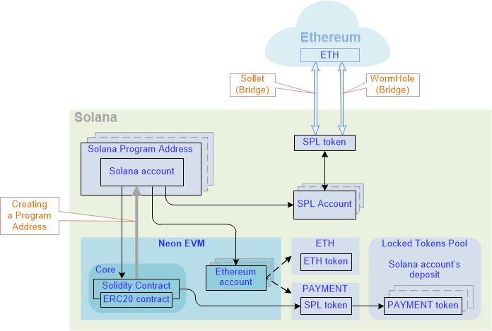

Transaction Value token as an analogue of ETH for Neon EVM Solutions
This section contains introductory information about the Transaction Value token (hereinafter Value token), which is analogous to the ETH token in Neon EVM solutions.
Using the original ETH token in Neon EVM can create additional difficulties when calculating payment of rewards to transaction participants. Therefore, the Value token is introduced to circulate inside Neon EVM. This token is analogous to ETH, coming from the Ethereum network through one of the bridges: WormHole or Sollet. Each of these bridges transfers funds (assets) from ETH-token to SPL-token and back.
Transfer of funds using bridges is automated, so the converted tokens are directly transferred to Neon EVM. The token conversion scheme is implemented in such a way that it allows transactions to be executed in parallel. Unlike the method of conversion through ERC20 tokens (this method is used in Ethereum, where a map is used with accounts inside a contract), this scheme does not allow transactions to line up in one queue.

Storing balances inside Neon EVM
Inside Neon EVM is the Ethereum account. For each user, the Ethereum account contains two fields for storing two types of coins:
ETH(orUSDT): a coin identifier, which is a Value token.PAYMENT: a token to pay for transactions; each user can create a token, which they will pay with the operator for transactions.
Part of the Ethereum account code should work with ETH and the other part with PAYMENT.
The Solana account is outside Neon EVM and is built as a program address of the Ethereum account. Therefore, only the Ethereum account can access the Solana account. The Solana account contains a balance in SPL tokens. All operations with a Value token are performed through an appeal to the SPL token. This balance is built in a certain fixed way according to the Ethereum account address and the Neon EVM program address. Therefore, only the Solana account can access this balance.
Since only a specific Ethereum account can access the Solana account, only this Ethereum account can also access the Solana account balance.
When funds are transferred between users, an SPL token is requested, and it transfers funds from one balance to another. Users' balances are stored in their accounts. This placement of balances eliminates the appearance of a queue for processing transactions.
Neon EVM contains the ERC20 contract. This contract provides work with the balances of Solana's accounts (the ERC20 contract is called from inside the Solidity contract).
Creating an Ethereum account
As soon as an Ethereum account is created, an SPL token balance it is automatically built for a specific user. This operation can only be done by Neon EVM since only it has authorization to perform an operation from the program-account address (Solana account).
After the Ethereum account is created, it becomes possible to send a Value token to the contract to a user's balance to process transfers made from the contract code.
Payment for execution of a transaction
A user has the ability to choose the token in which they will pay an operator for completing a transaction.
To do this, the user creates an account in Neon EVM, where he can transfer ETH tokens through a bridge to pay for transactions. They automatically get a balance in the SPL token.
Transferring
ETH(orUSDT) tokens through one bridge (for example, through WormHole) will not be equivalent to transferring the same tokens through another bridge (for example, through Sollet). This means that the user cannot withdrawETHtokens from their balance through one bridge (WormHole), if these tokens were transferred to this balance through another bridge (Sollet).
Since a coroutine address is linked to the user's balance, no one except this coroutine address can use this token.
Token circulation
When a user creates a transaction, they specify the cost of its execution, taking into account gas price. An operator receives the transaction for execution taking into account the cost specified by the user, as well as a fee. The user's funds are blocked to be paid to the operator following execution.
User funds are transferred to the collateral pool in the form of SOL tokens. The amount of tokens depends on setting up a multisig account (in the current implementation, this value is hardcoded).
Depending on the number of operations in a transaction, it can be performed in one or several iterations.
Token circulation for transaction execution in one iteration
Before executing a transaction, an operator transfers funds to the Neon token collateral pool. At the same time, they pay a fee to the validator for checking signatures and pays rent for storing data on the balance of the account.
After the transaction is completed, PAYMENT tokens are transferred from the user's balance to the operator's balance to cover the costs.
Token circulation for transaction execution in multiple iterations
Unlike a non-iterative transaction, the payment of funds to operators is added to make them more interested in facilitating faster transaction execution. This is done so that the accounts involved in the process are not blocked for an extended period of time.
At the start of an iterative transaction, an operator transfers a fee to the collateral pool, as well as funds (SOL tokens) to a special deposit account. The funds in this account will be paid to the operator who completes the transaction. The fee will be paid for execution costs over multiple iterations.
The priority to receive funds from a deposit is given to the operator who sent the transaction for execution.
A transaction contains the name of the operator that is executing it. Also, the transaction indicates the block number when the last activity of this operator was. If fewer blocks have passed than the hardcoded value of the blocks, then this operator can continue the transaction. Only the operator specified in it can cancel the transaction. If more blocks have passed, then any operator can continue the transaction. The right to execute the transaction passes to the operator that intercepts this execution, that is, who is ahead of the others.
The right to withdraw funds from a deposit is granted to the operator who performs the final step. At this step, the user's funds are transferred to the deposit.
If for some reason a transaction is canceled (using the "Cancel" operation), the blocked funds of a user are returned to them. The deposit that was frozen is burned. No payout is made to operators. This is done so that operators are motivated to complete the transaction.